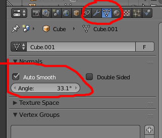

13 Features That Were Removed From Blender
19 July 2024
As a Blender user since version 2.78, I’ve watched the best free 3D software evolve—many features got added, and some features got removed.
This article goes over 13 features that older versions of Blender had that the latest one doesn’t.
1. DupliFrames
In Blender, DupliFrames refer to a technique used in animation where objects are duplicated and placed along the frames of an animation sequence.
DupliFrames in Blender provide a method to duplicate objects across frames in an animation, facilitating the creation of repetitive or patterned animations with ease.
DupliFrames were removed in Blender 2.80 because they were incompatible with the new dependency graph.
2. Slow Parent
Also removed in Blender 2.80 because they were incompatible with the new dependency graph, “Slow Parent” is a feature that allows you to create a delayed parenting effect between objects. This means that when an object is set as a child of another object with Slow Parent enabled, there will be a lag or delay in how the child object follows the movements of the parent object.
3. RRT View Transform and Film Looks
Blender 2.79 and earlier has a view transform option in the color manamegement panel called “RRT” which is actually a type of ACES color transform. These Blender versions came with a vast array of film emulation LUTs too. RRT and the film LUTs was removed in Blender’s 2.80 release.
The screenshot was taken in Blender 2.80. The film looks were obtained by copying the color management data folder from an older version of Blender into 2.80.
4. Pre-4.1 Auto Amooth Shading Functionality

Prior to Blender 4.1, the “Auto Smooth” shading option was located in the mesh data tab.
What this means is that the Auto Smooth settings are shared between objects that share the same mesh data. So when you change the Auto Smooth settings of an instance, its other instances have their Auto Smooth settings updated automatically.
In 4.1, Auto Smooth was changed to a modifier. Modifiers are not linked between objects just because they share mesh data. So to change the Auto Smooth of a set of linked objects, you have to change all of their modifiers.
Although the new Auto Smooth makes this particular use case more cumbersome, it introduced benefits such as being able to calculate the auto-smoothed normals at specific points in objects’ modifier stacks.
5. Blender Internal Render Engine
The Blender Internal rendering engine, often referred to simply as "Blender Internal" or "Blender Render" (BR), was the original rendering engine used in Blender prior to version 2.80. It was designed to handle various rendering tasks such as shading, lighting, and rendering within the Blender interface itself.
Blender Internal supported various rendering techniques including Raytracing, Ambient Occlusion, Shadows, Reflections, and Transparency.
Blender Internal had its own material and texture system.
EEVEE, which replaced Blender Internal, has a lot of things its predecessor didn’t. But it doesn’t have everything Blender Internal had either.
Blender Internal had “halo” rendering, a built-in toon shader, and options for famous shading models used in computer graphics:
- Cook–Torrance
- Blinn–Phong
- Oren–Nayar
- Lambert
Whereas in the current Blender, EEVEE has only the GGX and Multiscatter GGX shading models.
6. Blender Game Engine
The Blender Game Engine (BGE) was a component of Blender that allowed users to create real-time interactive content, such as games and simulations, directly within the Blender environment.
One of the distinctive features of the BGE was its visual programming system called "Logic Bricks." This system allowed users to create game logic by visually connecting logic bricks representing events, conditions, and actions. It was designed to be accessible to users without programming experience.
In addition to Logic Bricks, the BGE supported scripting in Python. Users could extend and customize game logic and behavior by writing Python scripts that interacted with Blender's game engine components.
The BGE included support for real-time physics simulation, allowing users to create interactive environments with realistic physics interactions such as collisions, gravity, and constraints.
7. Hemisphere Light
In Blender, the Hemisphere Light was a type of light source that provided ambient lighting and soft shadows, particularly useful for simulating outdoor scenes or environments where indirect lighting was important. However, the Hemisphere Light was deprecated and removed from Blender starting from version 2.80 and onward.
8. Musgrave Texture Node
The Musgrave texture node was replaced by the Noise Texture node, which includes all the same functionality.
Explanation
9. Sharp Glossy Shader Distribution
The sharp distribution setting of the Glossy BSDF shader was removed from Blender. It simply gave you a glossy shader with a roughness of 0. Because it is equivalent to that, its disappearance didn’t lose useful functionality from Blender’s Glossy BSDF shader.
10. Scene Layers
In Blender 2.80 and later versions, scene layers as they existed in earlier versions (up to 2.79) were replaced with Collections. This change was part of a broader reorganization and modernization effort in Blender's interface and workflow.
In Blender versions prior to 2.80, the concept of scene layers involved organizing objects into up to 20 distinct layers. Each layer could be independently toggled on or off, allowing for selective visibility and management of objects within a scene. The layer system was somewhat limited in flexibility and didn't scale well for complex scenes or larger projects. It also didn’t support hierarchy, meaning objects couldn’t be grouped or organized beyond the 20 independent layers.
11. Single-Sided Normals
In Blender 2.80 onwards, double-sided normals are always-on by default.
12. NLM Denoiser
NLM was Blender’s non-AI denoiser. The NLM Denoiser was removed after the release of 2.93 becase AI denoising algorithms generally yield better results.
13. Old Specular Tint and Sheen Tint Sliders
In Blender 4.0 and newer, Specular Tint and Sheen Tint are color inputs. They were sliders in earlier versions, which allowed for easily mixing a tint color between the albedo color and white. Now, this color mixing needs to be done using Mix Color nodes.